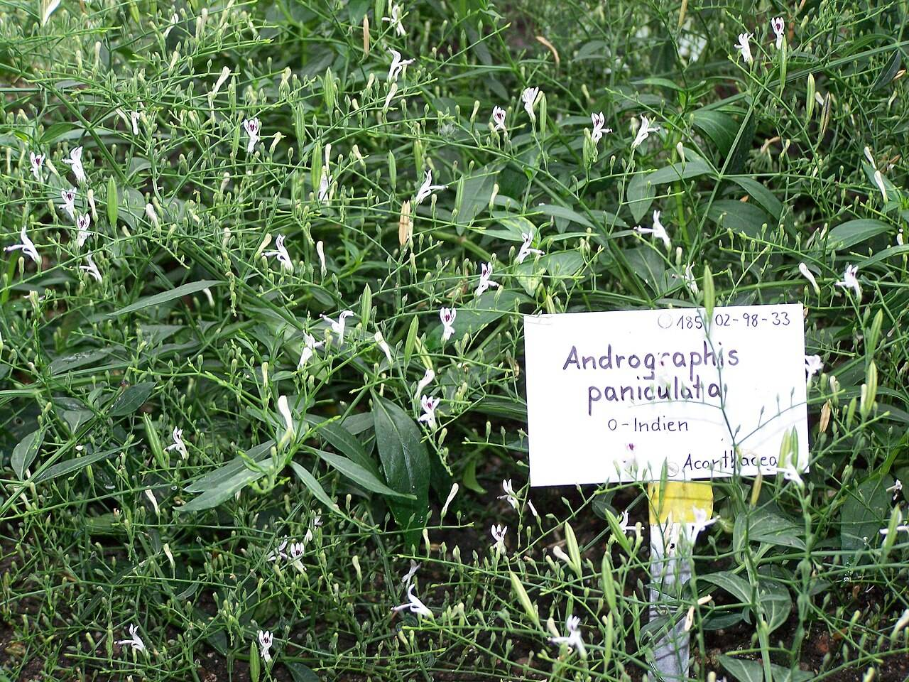

Cikk · Andrographis
Andrographis megfázásra: a tüneteken talán segít, az allergiát ne vedd félvállról
Ha egy immunerősítő kapszula címkéjén meglátod az andrographis nevet, érdemes tudnod két dolgot. A tünetekre van némi biztató adat, egy ország gyógyszerhatósága viszont épp most lépett az allergiás reakciók miatt.

Egy keserű növény a kapszulában
Az andrographis Délkelet-Ázsiából származó, nagyon keserű gyógynövény. Angolul „a keserűség királyának” is hívják, és az indiai meg a kínai hagyományos gyógyászatban régóta használják köhögésre, megfázásra. Nálunk ritkán áll külön a polcon, inkább összetett, „immun” feliratú készítményekben bukkan fel, sokszor echinaceával együtt.
Megnéztem, mit ír róla az amerikai Nemzeti Egészségügyi Intézet (NIH) étrend-kiegészítő hivatala az immunműködésről szóló fogyasztói lapjában, amelyet 2025. március 10-én frissítettek.
Mit mond a NIH?
Amit a lap ír Néhány vizsgálat szerint ha már elkaptad a megfázást vagy más légúti fertőzést, és utána szeded, enyhébbek lehetnek a tünetek, és hamarabb elmúlhatnak.
Amit hozzátesz Ezt további vizsgálatoknak még meg kell erősíteniük. Megelőzésről a lap nem beszél.
Egy 2017-es összefoglaló 33 vizsgálatot nézett át, és a köhögésnél meg a torokfájásnál talált javulást a placebóhoz képest. A szerzők viszont maguk írják, hogy a vizsgálatok minősége összességében gyenge volt, és a készítmények gyártásáról is alig közöltek valamit. Szóval van jel, de vékony.
Amire tényleg figyelj
A NIH szerint előírás szerinti használatnál nem jeleztek biztonsági gondot. Mellékhatásként előfordulhat hányinger, hányás, szédülés, bőrkiütés, hasmenés és fáradtság.
Ha vérnyomáscsökkentőt vagy véralvadásgátlót szedsz, ezt beszéld meg az orvosoddal, mert az andrographis csökkentheti a vérnyomást és hígíthatja a vért. Az immunrendszert elnyomó gyógyszerek hatását is gyengítheti. A lap szerint a termékenységre is hathat, ezért egyes kutatók azt javasolják, hogy terhesség alatt, vagy ha babát terveztek, kerüld.
Én úgy látom, hogy ez nem az a kapszula, amit érdemes „hátha” alapon bekapni. Lent elolvashatod, miért.
Források
- Office of Dietary Supplements, NIH. Dietary Supplements for Immune Function and Infectious Diseases — Fact Sheet for Consumers. Frissítve: 2025. március 10. Andrographis szakasz. https://ods.od.nih.gov/factsheets/ImmuneFunction-Consumer/
- Hu XY, Wu RH, Logue M és mtsai. Andrographis paniculata (Chuān Xīn Lián) for symptomatic relief of acute respiratory tract infections in adults and children: A systematic review and meta-analysis. PLoS One. 2017;12(8):e0181780. https://doi.org/10.1371/journal.pone.0181780 · PubMed 28783743
- Therapeutic Goods Administration. Andrographis removed from listed medicines framework because of allergy risk. 2026. szeptember 21. tga.gov.au